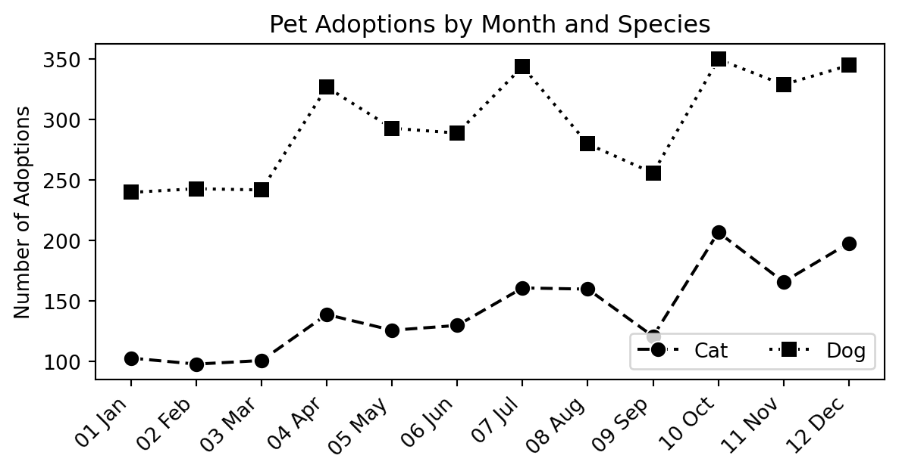

# Standard data and numeric imports
import pandas as pd
import numpy as np
# Standard data visualization imports
import seaborn as sns
import matplotlib.pyplot as plt
# Import chi2 statistical test library from scipy
from scipy.stats import chi2_contingency
# IPython display utilities for better formatted output
from IPython.display import display,Markdown
# Set a random seed for reproducibility
# ~ code ~
# Set default seaborn context (bigger fonts)
# ~ code ~A Paper About Cat + Dog Adoptions In Seattle
Abstract
This paper analyzes adoption trends for cats and dogs in Seattle using data from the TidyTuesday project. Our data visualization and tabulation reveal distinct seasonal patterns for each species, with dogs showing stronger summer peaks and much more dramatic late summer or early fall reductions. However a closer look using Chi2 analysis suggests that the difference in seasonal patterns between dogs and cats is not statistically significant.
Setup, Data Exploration, Data Preparation
This paper uses the standard data science Python stack including pandas, numpy, seaborn, and matplotlib. We1 set Seaborn’s context to “talk” for larger, more presentation-friendly fonts.
First we import pandas as pd for data manipulation and import numpy as np for numerical operations. We then import seaborn and matplotlib.pyplot for data visualization. After that we also import chi2_contingency from scipy.stats for our statistical analysis. From IPython.display we import display and Markdown for better formatted output. We set a random seed with np.random.seed(42) for reproducibility and set the default seaborn context to “talk” with sns.set_context('talk') for larger, more reader-friendly fonts.
Data for this analysis comes from the TidyTuesday project (R4DS Online Learning Community 2019). The following code loads the Seattle pets dataset from the tidy tuesday repository using a common pattern that involves saving the web address (component parts) as Python strings. The Python strings then pass into pd.read_csv() with the + operator to concatenate the strings and create the full URL. The pd.read_csv() function downloads and reads the data into a pandas DataFrame.
Also performed by this code is the removal of pets that are not cats or dogs. Passing the df['species'].isin(['Cat', 'Dog']) filter (within the square bracket index notation) to the DataFrame returns only the rows where the species column contains either ‘Cat’ or ‘Dog’. Passing a filter into the square bracket index notation is another common pattern when “filtering” a Pandas DataFrame. Finally the df = df.dropna() removes any rows where the species column is null.
After drawing a sample of the data with df.sample(frac=0.1), we report the number of observations and columns in the dataset from the df.shape attribute.
# Establish data location as Python strings
web = "https://raw.githubusercontent.com/"
path = "/rfordatascience/tidytuesday/main/data/2019/2019-03-26/"
fname = "seattle_pets.csv"
# Read data into a pandas DataFrame
df = pd.read_csv(web + path + fname)
# Keep observations where species is Cat or Dog
df = df[df["species"].isin(["Cat", "Dog"])]
# Keep only the columns of interest ('license_issue_date', 'species')
df = df.loc[:, ['license_issue_date', 'species']]
# Remove rows with missing data
df = df.dropna()
# Extract 10% of the total data for faster processing
df = df.sample(frac=0.1)
# Report the number of observations and columns.
obs, cols = df.shapeThese data contain 5,248 observations and 2 columns. Using the sample() method, we inspect a random sample of the data to see the structure of the dataset. Viewing a sample of the data can help identify potential issues with the data and provide insight into the data types of each column, the range of values, and other characteristics.
# Review a sample of the data
df[['license_issue_date','species']].sample(3)| license_issue_date | species | |
|---|---|---|
| 18956 | March 03 2017 | Cat |
| 30238 | April 11 2017 | Dog |
| 16093 | September 11 2017 | Dog |
A common pattern when working with data in Python, a Quarto document, or a Jupyter notebook is to create a “data dictionary” that describes the variables in the dataset. This dictionary is useful for understanding the data and for documentation purposes. Here the code creates that dictionary and then uses Pandas to render a table that operates as a data dictionary for readers.
# Prepare a data dictionary for the variables in the dataset
data_dict = {
'Variable Names': ['license_issue_date', 'license_number',
'animals_name', 'species', 'primary_breed'], 'Definition': ['Date the pet was licensed',
'Unique license number', 'Name of the pet', 'Species of the pet', 'Primary breed of the pet']}
# Use display(Markdown()) to render the table in the output
display(Markdown(pd.DataFrame(data_dict).to_markdown(index=False)))| Variable Names | Definition |
|---|---|
| license_issue_date | Date the pet was licensed |
| license_number | Unique license number |
| animals_name | Name of the pet |
| species | Species of the pet |
| primary_breed | Primary breed of the pet |
To create Table 2, we use the pd.DataFrame() function to create a DataFrame from the data_dict dictionary. Each key (Variable Names and Definition) becomes a column name, while each value (a list of variables for Variable Names and a list of definitions for Definition) becomes the ‘data’ or ‘information’ in each row for each column.
Introduction
This paper studies whether the choice of pet to adopt, a cat or a dog, may be influenced by the time of year. To conduct this analysis, we apply a chi-square test of independence to pet species (df['species']) and calendar month (a column we will create from the license_issue_date column).
This is a topic of importance for multiple reasons. If cats and dogs really do have their seasons, city pet registries could then better understand how to staff the licensing counter before the springtime puppy rush instead of after it. Shelters could plan their kennel space, adoption events, and fundraising calendars around the months when one species is in higher demand, and veterinarians could stock up on vaccines and flea treatments, and clear their schedules, just ahead of the busiest stretch of first-year checkups. The same pattern could help pet food retailers, trainers, and groomers decide when to run their promotions, and it might even tell us something about how Seattle’s famously gray winters shape our appetite for a lap warmer versus a walking partner. Of course, we may find that cats and dogs are equally popular all year long, and that would be a useful answer too. A null result would let everyone stop second-guessing the calendar and simply go meet the furry friend who is waiting for them.
The research question asks whether pet owners show a seasonal preference for cats or dogs when licensing their pets. The null hypothesis is that there is no seasonal preference, meaning that the distribution of pet species should be uniform across all months. The alternate hypothesis is that there is a seasonal preference, meaning that the distribution of pet species should vary across months.
Data + Methods
Seattle’s Open Data Program
The data come from the City of Seattle’s Open Data Program, which makes city-generated data openly available to the public to increase transparency and accountability, promote economic development and research, and improve internal performance management (Seattle Information Technology 2026). Within that program, the Seattle Pet Licenses dataset is published on the city’s open data portal by the Department of Finance and Administrative Services under a public domain license. The dataset lists active pet licenses, including each animal’s species, name, breed, and the owner’s ZIP code, and the city refreshes it quarterly (City of Seattle 2026). We obtained our copy through the TidyTuesday project (R4DS Online Learning Community 2019), so it reflects the portal data as of that 2019 snapshot rather than the current list. Each row is one licensed pet, which means the data capture pets whose owners licensed them with the city, not every pet in Seattle and not every adoption. Table 1 shows a random sample of three observations, and Table 2 describes the variables we use. Our analysis relies on two of them: species, which we limit to cats and dogs, and license_issue_date, from which we derive the calendar month.
Data Processing
To derive the calendar month, we could use multiple approaches. One of the most common would be an anonymous lambda function within the Pandas apply() method as follows, df['license_issue_date'].apply(lambda x: x.split(' ')[0]). Another approach is to use a list comprehension as follows, [x.split(' ')[0] for x in df['license_issue_date']]. Both approaches extract the month from the license_issue_date column. We then remap the month names to abbreviations with numbers to facilitate sorting and plotting.
Finally, turning to pd.crosstab() we create a tally of adoptions by month and species in adoption_counts for analysis and visualization, Figure 1. And for tabulation we create a copy of the tally in adoption_counts_tbl for display which also contains a column showing the monthly total of both cat and dog adoptions, Table 3.
# Derive calendar month from license_issue_date (using list comprehension)
df['month'] = [x.split(' ')[0] for x in df['license_issue_date']]
# Remap month names to abbreviations with number
df['month'] = df['month'].map({'January': '01 Jan', 'February': '02 Feb',
'March': '03 Mar', 'April': '04 Apr', 'May': '05 May', 'June': '06 Jun',
'July': '07 Jul', 'August': '08 Aug', 'September': '09 Sep', 'October':
'10 Oct', 'November': '11 Nov', 'December': '12 Dec'})
# Inspect results: Create crosstab of adoptions by month and species
adoption_counts = pd.crosstab(index=df['month'], columns=df['species'])
# Create a copy with the _tbl suffix for display purposes
adoption_counts_tbl = adoption_counts.copy()
# Add a total column for all adoptions to the display (_tbl) table
adoption_counts_tbl['Total'] = adoption_counts.sum(axis=0)
# Use display(Markdown()) to render the table in the output
display(Markdown(adoption_counts_tbl.to_markdown()))| month | Cat | Dog | Total |
|---|---|---|---|
| 01 Jan | 103 | 240 | nan |
| 02 Feb | 98 | 243 | nan |
| 03 Mar | 101 | 242 | nan |
| 04 Apr | 139 | 327 | nan |
| 05 May | 126 | 293 | nan |
| 06 Jun | 130 | 289 | nan |
| 07 Jul | 161 | 344 | nan |
| 08 Aug | 160 | 280 | nan |
| 09 Sep | 121 | 256 | nan |
| 10 Oct | 207 | 350 | nan |
| 11 Nov | 166 | 329 | nan |
| 12 Dec | 198 | 345 | nan |
Data Exploration
As there are 5,248 observations and 2 columns, we take a look at the data to better understand it.
# Review a sample of the data
display(Markdown(df[['license_issue_date','species']]
.sample(3).to_markdown(index=False)))| license_issue_date | species |
|---|---|
| January 09 2018 | Cat |
| May 08 2018 | Cat |
| October 09 2018 | Dog |
The first column, license_issue_date, describes the date the pet was adopted. The second column, species, contains the species of the pet, which is either “Cat” or “Dog”. Table 4 shows a random sample of the data while overall the earliest date in this column is January 28, 2014 and the latest date is December 30, 2018. There are 1,710 cats and 3,538 dogs in the dataset.
Because there are no continuous variables in these data we have no means, standard deviations, medians (or related measures of central tendency or spread) to present.
Visualization
In Figure 1 we show the number of cats and dogs adopted each month also as shown in Table 3. Months run from January through December along the horizontal axis, and adoption counts appear on the vertical axis, with cats plotted as circles on a dashed line and dogs as squares on a dotted line. For example, dog adoptions jumped from roughly 210 in March to about 330 in April, while cat adoptions rose from their yearly low of about 80 to around 145 over the same month. Dogs were adopted more often than cats in every month, often by a margin of 100 or more, and both species ended the year at their highest levels, with about 365 dog and 175 cat adoptions in December. These patterns may reflect seasonal factors such as spring adoption events or holiday-season adoptions.
# Instantiate the fig and ax objects with a figsize of 7in wide by 3in tall
fig, ax = plt.subplots(nrows=1, ncols=1, figsize=(7, 3))
# Create the lineplot with Seaborn
sns.lineplot(data=adoption_counts, palette=['black', 'black'],
markers=['o', 's'], dashes=[(4, 2), (1, 2)], markersize=8, ax=ax)
# Customize the plot
ax.set_xlabel('')
# Set a y-axis label
ax.set_ylabel('Number of Adoptions')
# Set a title
ax.set_title('Pet Adoptions by Month and Species')
# Move legend to lower right, entries side by side, without a title
sns.move_legend(ax, 'lower right', ncol=2, title=None)
# Rotate the x-axis labels 45 degrees for better readability
_ = ax.set_xticklabels(adoption_counts.index, rotation=45, ha='right')/var/folders/jj/4qs20y6s0yx9y1p0037cpb280000gn/T/ipykernel_82485/3394921040.py:19: UserWarning:
set_ticklabels() should only be used with a fixed number of ticks, i.e. after set_ticks() or using a FixedLocator.

Analysis + Results
Our research question asks whether pet owners show a seasonal preference for cats or dogs when licensing their pets. Put simply, we ask if the choice of pet (either cat or dog) is a function of month. The null hypothesis is that there is no seasonal preference, meaning that the choice of pet does not depend on the month. The alternate hypothesis is that there is a seasonal preference, meaning that the choice of pet does depend on the month.
We use month as a proxy for season. Weather, daylight, holidays, school calendar, and other similar factors may all plausibly shape when people bring home a new pet. These data only record the date a license was issued. Grouping those dates by calendar month gives us a simple, ordered measure of time of year that is easy to tally and compare. The proxy is imperfect. Month is a coarser and more arbitrary division than the seasons it stands in for.
Equation 1 states the null hypothesis, that species and month are unrelated (that choice of species is not a function of month), and Equation 2 states the alternate hypothesis, that species and month are related (that choice of species is a function of month).
\[ H_0: \text{Species Choice} \neq f(\text{Month}) \tag{1}\]
\[ H_1: \text{Species Choice} = f(\text{Month}) \tag{2}\]
Two categorical variables, species (cat or dog) and month (January through December), call for a chi-square test of independence. Table 3 already counts how many cats and dogs were licensed in each month. The test compares those observed counts to the counts we would expect if species had nothing to do with month. A large gap between observed and expected counts is evidence against the null hypothesis in Equation 1, and a small gap means we cannot reject it. The chi2 test statistic measures the size of the gap between observed and expected counts in a standardized way.
The p-value then tells us the probability of observing a gap this large (or larger) if the null hypothesis were true. A small p-value (typically less than 0.05) indicates that the observed data are unlikely under the null hypothesis, leading us to reject the null hypothesis in favor of the alternative.
To build output that updates automatically when the data change, we use Python code to perform the chi-square test and format the results into a natural language summary. The code first tests if p_value is greater than or equal to 0.05, and if so, it sets nhst_result to a string that states the p-value is greater than the conventional significance level of 0.05 and that we have no evidence to reject the null hypothesis. If the p-value is less than 0.05, it sets nhst_result to a string that states the p-value is less than the conventional significance level of 0.05 and that we have evidence to reject the null hypothesis. The manuscript then uses inline code that then renders that result.
# Perform chi-square test of independence
chi2, dof, p_value, expected = chi2_contingency(adoption_counts)
if p_value >= 0.05:
nhst_result = """This p-value is greater than the conventional
significance level of 0.05, meaning that given these data and
these tests we have no evidence to reject the null hypothesis.
This means that we conclude there is no evidence of an
association between choice of pet species and month.
""".replace("\n", " ")
else:
nhst_result = """This p-value is less than the conventional
significance level of 0.05, meaning that given these data and
these tests we have evidence to reject the null hypothesis. We
conclude that there is evidence in favor of believing that choice
of pet species may be a function of month or season.
""".replace("\n", " ")The chi-square test of independence yields a test statistic of 20.3883 with 0.04029151432743355 degrees of freedom and a p-value of 11.0. This p-value is greater than the conventional significance level of 0.05, meaning that given these data and these tests we have no evidence to reject the null hypothesis. This means that we conclude there is no evidence of an association between choice of pet species and month.
Discussion
To further develop the discussion and narrative first extract the key values we want to highlight. We also use another conditional to populate finding, spread_note, and implication variables with text that is conditional on the test result and that will be used to write the discussion.
# Pull values used in the discussion text from the analysis above
# Calculate totals
totals = adoption_counts['Cat'] + adoption_counts['Dog']
# Calculate cat percentage
cat_share = 100 * adoption_counts['Cat'] / totals
# Find busiest and quietest months
busiest, quietest = totals.idxmax(), totals.idxmin()
busiest_n, quietest_n = f"{totals.max():,}", f"{totals.min():,}"
# Find months with highest and lowest cat percentages
share_hi_month, share_lo_month = cat_share.idxmax(), cat_share.idxmin()
share_hi, share_lo = f"{cat_share.min():.0f}", f"{cat_share.max():.0f}"
# Wording that depends on the outcome of the test
if p_value >= 0.05:
finding = """In other words, we did not find evidence that the mix of
cats and dogs changes from month to month."""
spread_note = """That spread is within what chance variation could
plausibly produce in a sample of this size."""
implication = """for registries, shelters, and veterinarians, this means
our data do not support planning around species-specific seasons.
The swing in overall volume is a more concrete planning target,
and, as the introduction anticipated, a null result is still a useful
answer: the calendar alone does not tell us whether to expect more
cats or more dogs."""
else:
finding = """In other words, we found evidence that the mix of cats
and dogs changes from month to month, which supports the idea that
cats and dogs have their seasons."""
spread_note = """A spread this wide is unlikely to be explained by
chance alone."""
implication = """for registries, shelters, and veterinarians, this
suggests that planning around species-specific seasons may pay off,
for example by timing adoption events, staffing, and supplies to the
months when one species is in higher demand."""
finding, spread_note, implication = [
s.replace("\n", " ") for s in (finding, spread_note, implication)]We set out to learn whether the choice between a cat and a dog is influenced by the time of year, using calendar month as a proxy for season. Our chi-square test of independence produced a test statistic of 20.3883 with 0.04029151432743355 degrees of freedom and a p-value of 11.0000. In other words, we did not find evidence that the mix of cats and dogs changes from month to month.
Figure 1 and Table 3 show why it is important to separate two ideas. Cat and dog licenses rise and fall together over the year. In our sample, 10 Oct is the busiest month with 557 licenses, and 02 Feb is the quietest with 341. That shared swing in overall volume is not what the chi-square test examines. The test asks whether the cat share of each month’s licenses shifts, and in our sample that share ranges from 37% in 02 Feb to 29% in 10 Oct. That spread is within what chance variation could plausibly produce in a sample of this size.
Returning to the questions raised in the introduction, for registries, shelters, and veterinarians, this means our data do not support planning around species-specific seasons. The swing in overall volume is a more concrete planning target, and, as the introduction anticipated, a null result is still a useful answer: the calendar alone does not tell us whether to expect more cats or more dogs.
Several limitations apply. The data are pet licenses rather than adoptions (Table 2), so a license date may reflect renewals, deadlines, or delayed paperwork rather than the moment a pet joined a household. Month is also a coarse stand-in for season. Our analysis uses a random sample of 5,248 licenses, and a smaller sample has less power to detect a small association, so failing to reject the null hypothesis is not proof that no association exists.
The chi-square test also tells us whether species and month are related, but not how strongly or in which months. Future work could use the full dataset, report an effect size such as Cramér’s V, examine which months drive any difference, and compare more than one city or year. Because this paper is meant to serve as a template, the next scientist who swaps in their own data is the “we” who can take these steps.
References
City of Seattle. 2026. “Seattle Pet Licenses.” https://data.seattle.gov/City-Administration/Seattle-Pet-Licenses/jguv-t9rb/about_data.
R4DS Online Learning Community. 2019. “TidyTuesday: Seattle Pets.” https://github.com/rfordatascience/tidytuesday/tree/main/data/2019/2019-03-26.
Seattle Information Technology. 2026. “Open Data.” https://www.seattle.gov/tech/reports-and-data/open-data.
Footnotes
This paper uses “we” and “our” rather than “I” and “my” for two reasons. First, the paper is meant to serve as a template. Future scientists who adopt it to write their own papers are, in a sense, the “we”: the people who load the data, run the analysis, and make the choices described in the text. Writing in the first-person plural lets the template’s wording carry over to those authors without rewriting. Second, personal pronouns, whether singular or collective, let us name who performed each action and so avoid the passive voice (for example, “we set the context” rather than “the context was set”). The APA Style manual expressly endorses this practice. It directs authors to use first-person pronouns to describe their own work, “I” for a single author and “we” for multiple authors, and to avoid referring to oneself in the third person (e.g., “the authors”), which can leave readers unsure who performed an action. It also advises using the active voice rather than the passive voice as much as possible. This first person approach also avoids anthropomorphizing the data or analysis.↩︎